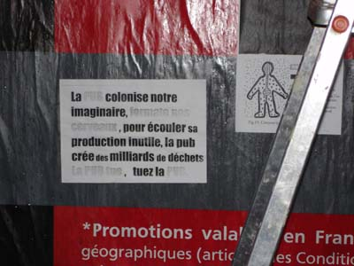

| |
Site dédié à la publication d'informations communiquées par le Collectif des déboulonneurs. En aucun cas ce site n'appelle à des actions illégales. | |
 |
||
|
Accueil du site > Paris > Compte rendu de la 5e action du collectif des déboulonneurs de Paris, le 24 (...)
Malgré la pluie, le collectif des déboulonneurs de Paris a effectué sa cinquième action de désobéissance civile contre le système publicitaire. Le rendez-vous était donné place de la Nation à 18h57. Quelques minutes plus tard, la troupe descendait la rue du Faubourg St Antoine jusqu’au croisement avec la rue de Picpus pour atteindre les 7 panneaux pressentis au barbouillage. Ces panneaux n’étaient pas des « 4X3 » sous verre, lumineux et déroulants mais des modèles simples accueillant des affiches en papier. Les affiches ont été recouvertes des inscriptions : « Marée noire sur la matière grise », Attention, matraquage publicitaire », « nuisance visuelle », « pollution mentale », « A-t-on le droit à ne pas subir la publicité ? », « formatage de l’imaginaire ». Un public d’environ 70 personnes était présent en soutien et s’est exprimé dans le cadre de notre désormais traditionnelle tribune libre. Les prises de parole ont commencé plus tard que lors des actions précédentes du fait de l’absence provisoire du porte-voix. Au sein du public se trouvaient deux élus parisiens. Jean-Christophe Mikaïloff, élu du 11e arrondissement, et Charlotte Nenner, élue du 10e et conseillère de Paris. Cette dernière a pris la parole pour rappeler le caractère illégal de nombreux panneaux et illégitime de nombreux autres, même légaux. L’un des barbouilleurs a également pris la parole pour soulever le problème de l’inégalité environnementale inhérente à la pollution du cadre de vie par la publicité. En effet, certains quartiers sont relativement peu touchés par l’affichage, d’autres beaucoup plus. Or, les personnes qui sont aux commandes de l’industrie publicitaire habitent très souvent dans les premiers... Les forces de l’ordre n’ayant pas montré le bout de leur matraque et une fois les prises de paroles terminées, il était décidé de mettre un terme à l’action. Le rendez-vous était donné à toutes et tous le 28 avril pour la prochaine action et plus directement dans la brasserie du coin pour discuter et un boire un verre. 
D’autres photos dans notre galerie |
|
Site utilisant SPIP - Hébergement Ouvaton
|